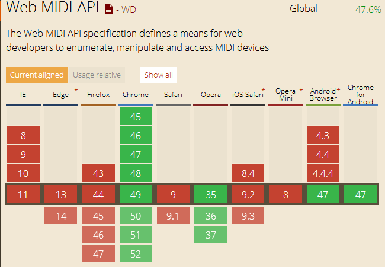

网页访问电脑上的midi乐器-Web MIDI requestMIDIAccess的介绍

开篇先说明哈，这篇文章所说的web midi可能不是你所想的那个midi音频，而是midi接口，在midi设备连接电脑时所用的。这个接口使得我们在浏览器中混音成为可能。
对于那些自90年代就开始使用的，“Web MIDI”代表的可能就是那些低保真的音频。 然而,未来,Web MIDI特别是Web MIDI API可能会有更多的潜力。
MIDI代表了一个乐器数字接口标准。这是一个协议,允许电子乐器、电脑和其他设备相互连接传输数据。它通过发送小消息从一个设备到另一个设备，就像说“注意代码12只是压”或“注意代码62不再被按下”,都在使用数字来标记。
Web MIDI API使用了这个协议,允许你使用一个MIDI-enabled仪器如电子琴键盘或电钢琴等，连接到你的计算机比把信息从电子键盘发送到浏览器。
目前，WEB MIDI接口暂时只被Chrome和Opera浏览器所支持，大家可以看下面这个图：
可以前往 这里 去查看详细的设备支持,Firefox什么时候支持这个接口，你可以关注mozilla官网中 这里所提交的一个修复bug .
我们可以注意到，安卓设备中自5.0之后，安卓的原生浏览器就已经支持了这个接口，当然可以通过安装Chrome for Android这个应用来支持这个接口。这使得在以后，我们使用手机来混音或者进行midi录制成为一种可能。
可是为什么我们要一个键盘连接到web浏览器呢?不是很多音乐家知道如何用QWERTY键盘制作一首音乐吗。但是，总的来说那些支持MIDI接口的音乐设备的数量是巨大的。通过连接支持MIDI接口的（MIDI-enabled）输入设备到我们的浏览器,然后使用网络音频API,我们能够打开网页就能够创建不同音色的乐器。
想玩一架钢琴吗?连接你的键盘并且访问一个网页,使用这些技术来复制一架钢琴的声音。或者你想要一个不同的声音?这个简单，只要你访问不同的网站就可以了。
说了这么多目的就是希望你可以看到这个API的好处,但它实际上是如何工作的呢?
访问一个MIDI设备
首先,我们要检查我们的浏览器是否支持Web的MIDI API。我们通过检测navigator.requestMIDIAccess这个方法是否存在. 这种方法只在支持的这个API的浏览器实现。
if (navigator.requestMIDIAccess) {
console.log('Browser supports MIDI!');
}
假设我们确定该方法存在,那么让我们通过浏览器的方式调用它来请求访问任何MIDI输入设备。
if (navigator.requestMIDIAccess) {
navigator.requestMIDIAccess()
.then(success, failure);
}
navigator.requestMIDIAccess() 将返回一个承诺,这意味着它将调用success函数或failure函数取决于它请求进行MIDI访问后的结果。这里我已经写好了这两个对应的函数。
function success (midi) {
console.log('Got midi!', midi);
}
function failure () {
console.error('No access to your midi devices.')
}
正如您可以看到的,我们的成功函数接受一个MIDI参数的形式MIDIAccess对象。MIDIAccess对象传递midi的关键数据。对象本身提供了一个接口,任何MIDI设备连接。输入代表任何MIDI设备连接到你的电脑。这里我有一个MIDI键盘插在电脑上,所以如果我现在console.log midi.inputs.size ,这里将会输出“1”。
为了从我们的设备得到输入数据，我们首先得创建一个变量，并把midi.inputs.values()分配给它。
var inputs = midi.inputs.values();
需要注意的一件重要的事情是,分配给inputs的值是一个迭代器。迭代器是一个对象,知道如何一次访问其属性,同时记录当前位置的迭代序列。它提供了一个next()方法允许您获得序列中的下一个项目。它也有一个done属性让我们知道是否我们已经迭代完对象的所有属性。这意味着我们可以写一个这样的for循环:
for (var input = inputs.next();
input && !input.done;
input = inputs.next()) { // each time there is a midi message call the onMIDIMessage function
input.value.onmidimessage = onMIDIMessage;
}
这个for循环所做的是什么:
创建一个名为input的变量并分配下一个输入。因为我们没有任何输入迭代,这将返回第一个我们的输入。
如果我们有一个输入并且输入迭代器的done值不等于true,这里就会继续循环。
从一个input设置到另一个输入迭代器对象。
您还会注意到,在这个for循环中，我们指定了一个函数输入的onmidimessage侦听器。这个函数将在任何由输入设备接收的MIDI事件传过来的时候调用。现在让我们创建这个函数:
function onMIDIMessage (message) {
console.log(message.data);
}
MIDI 数据解码
在MIDI消息中我们感兴趣的是它的数据,发送什么类型的MIDI事件?按键盘上的哪个键?
如果你按照这个教程中的做,您将会看到,当你按下一个琴键键盘,浏览器将打印类似 [144, 61, 95] 到控制台。然后当你把手指从键上移开的时候，浏览器将再次打印略有不同的东西,就像[128, 61, 0]。
这个数组可以分解。第一个元素表述的是MIDI事件的类型。MIDI消息可以包含一个相当小的数量的事件,每个事件都有一个相应的数字。在我们的例子中,144对应noteOn消息,表明键被按下,相应的128对应noteOff消息,告诉我们键已经不再被按下了。查看整个的MIDI事件类型的完整列表,查看消息列表的MIDI 规范 。
数组中的第二个值代表键盘上的哪个键被按下。每个音符在键盘上都有一个编号从0到127。在上面的例子中,我按下了61号按键,这通过使用这个查询表我们可以看到是一个c#(升C)。
数组中的第三个也是最后一个值代表的音量的大小,可以反应你按下这个键所用的速度。这可以用来在演奏钢琴键的时候达到控制音量强弱的效果。
现在我们知道哪个号码是对应哪个键被按下或释放,让我们把它变成有用的东西。让我们连接Web MIDI API到Web Audio API。如果你不熟悉Web Audio API,网上搜索一下吧。
Creating a Web Instrument创建一个Web乐器
让我们把我们的浏览器变成一个迷你的合成器。我们要创建一个振荡器产生一个频率的来响应midi接口的note,所以我们需要把MIDI输入转换成频率相关的数量。幸运的是我们的好朋友维基百科给了我们算法来做到这一点。这就是它在JavaScript中形式:
function midiNoteToFrequency (note) {
return Math.pow(2, ((note - 69) / 12)) * 440;
}
给它一个MIDI的note数，返回对应的频率。写在我们的 onMIDIMessage 函数中.
function onMIDIMessage (message) {
var frequency = midiNoteToFrequency(message.data[1]);
}
接下来如果MIDI消息是noteOn 消息我们就播放这个频率。
if (message.data[0] === 144 && message.data[2] > 0) {
playNote(frequency);
}
你可能很容易的理解第一部分的这 if 语句。我们检查的消息类型是144 noteOn消息。
但是第二部分是什么呢?然而，MIDI设备有时候,发送noteOff 消息时,会发送一个noteOn同时velocity为零的消息,所以我们检查消息的速度是不是大于零。
现在我们已经做好了noteOn ，我们将类似的给noteOff写一些东西。noteOff的消息值为128,所以我们不仅需要检查这个值而且还要检查是否它的速度是零为了保证我刚才提到的情况。
if (message.data[0] === 128 || message.data[2] === 0) {
stopNote(frequency);
}
现在我们要做的就是填写startNote 和stopNote 这两个函数。这是Web音频API的工作,因此遗憾的是超出了本教程的范围,但是如果你知道API那么下面完整的代码应该是可以理解的。
如果不了解的话,在可以在网上查看这几个音频API的教程这几个音频API的教程,其中包括如何构建一个合成器。教程的代码是类似于我在这里所做的,所以会是完美的应用你学过的东西。
var context = new AudioContext(),
oscillators = {};
if (navigator.requestMIDIAccess) {
navigator.requestMIDIAccess()
.then(success, failure);
} function success(midi) {
var inputs = midi.inputs.values(); // inputs is an Iterator
for (var input = inputs.next() ; input && !input.done; input = inputs.next()) {
// each time there is a midi message call the onMIDIMessage function
input.value.onmidimessage = onMIDIMessage;
}
} function failure() {
console.error('No access to your midi devices.')
} function onMIDIMessage(message) {
var frequency = midiNoteToFrequency(message.data[1]);
if (message.data[0] === 144 && message.data[2] > 0) {
playNote(frequency);
} if (message.data[0] === 128 || message.data[2] === 0) {
stopNote(frequency);
}
} function midiNoteToFrequency(note) {
return Math.pow(2, ((note - 69) / 12)) * 440;
} function playNote(frequency) {
oscillators[frequency] = context.createOscillator();
oscillators[frequency].frequency.value = frequency;
oscillators[frequency].connect(context.destination);
oscillators[frequency].start(context.currentTime);
} function stopNote(frequency) {
oscillators[frequency].stop(context.currentTime);
oscillators[frequency].disconnect();
}
下一步
记住,noteOn和noteOff 只是两个可用的消息类型,并且MIDI键盘只是这许多MIDI设备之一。你可能并不需要使用MIDI去创造音乐。你也可以用midi来玩一个html5的小游戏。MIDI设备的话千奇百变，可以是Yamaha EZ-TP MIDI Trumpet，MIDI小号来玩html5的游戏，不过这也确实是一种有意思的玩法。